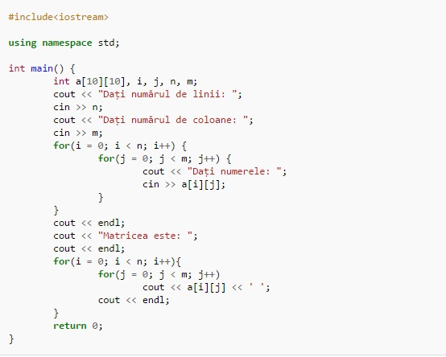

C++

C++ (pronunțat în română "C plus plus" și în engleză "si plas plas") este un limbaj de programare general, compilat. Este un limbaj multi-paradigmă, cu verificarea statică a tipului variabilelor ce suportă programare procedurală, abstractizare a datelor, programare orientată pe obiecte. În anii 1990, C++ a devenit unul din cele mai populare limbaje de programare comerciale, rămânând astfel până azi.
Bjarne Stroustrup de la Bell Labs a dezvoltat C++ (inițial denumit C cu clase) în anii 1980, ca o serie de îmbunătățiri ale limbajului C. Acestea au început cu adăugarea noțiunii de clase, apoi de funcții virtuale, suprascrierea operatorilor, moștenire multiplă, șabloane (engleză template) și excepții. Limbajul de programare C++ a fost standardizat în 1998 ca și ISO 14882:1998, versiunea curentă fiind din 2003, ISO 14882:2003. Următoarea versiune standard, cunoscută informal ca C++0x, este în lucru.
Istoricul C++
Stroustrup a început să lucreze la C cu clase în 1979. Ideea creării unui nou limbaj a venit din experiența de programare pentru pregătirea tezei sale de doctorat. Stroustrup a descoperit că Simula avea facilități foarte utile pentru proiecte mari, însă era prea lent, în timp ce BCPL era rapid, însă nu era de nivel înalt și era nepotrivit pentru proiecte mari. Când a început să lucreze pentru Bell Labs, avea sarcina de a analiza nucleul UNIX referitor la calcul distribuit. Amintindu-și de experiența sa din perioada lucrării de doctorat, Stroustrup a început să îmbunătățească C cu facilități asemănătoare Simula. C a fost ales deoarece era rapid și portabil. La început facilitățile adaugate C-ului au fost clase, clase derivate, verificare a tipului, inline și argumente cu valori implicite.
În timp ce Stroustrup a proiectat C cu clase (mai apoi C++), a scris de asemenea și Cfront, un compilator care genera cod sursă C din cod C cu clase. Prima lansare comercială a fost în 1985.
În 1982, numele limbajului a fost schimbat de la C cu clase la C++. Au fost adaugate noi facilități, inclusiv funcții virtuale, supraîncărcarea operatorilor și a functiilor, referințe, constante, alocare dinamică, un control al tipului mai puternic și noua variantă de comentariu pe un singur rând (liniile care încep cu caracterele '//').
În 1985 a fost lansată prima ediție a cărții "The C++ Programming Language" (Limbajul de programare C++), oferind informații importante despre limbaj, care încă nu era un standard oficial. În 1989 a fost lansată versiunea 2.0 a C++. Au apărut acum moștenirea multiplă, clase abstracte, funcții statice, funcții constante și membri protected. În 1990 o altă carte a fost lansată, oferind suport pentru standarde viitoare. Ultimele adăugări includeau template-uri, excepții, spații de nume (namespace-uri) și tipul boolean.
O dată cu evoluția limbajului C++, a evoluat și o bibliotecă standard. Prima adăugire a fost biblioteca de intrări/ieșiri (I/O stream), care oferea facilități pentru a înlocui funcțiile tradiționale C cum ar fi printf și scanf. Mai târziu, printre cele mai semnificative adăugari la biblioteca standard a fost STL (Standard Template Library) (Biblioteca de formate standard).
După ani de lucru, un comitet ANSI-ISO a standardizat C++ în 1998 (ISO/IEC 14882:1998).
Exemple
Program care afișează textul "Hello World":
Algoritmul lui Euclid prin împărțiri:
Citirea și afișarea unei matrici:
Alternativa citirii și afișării unei matrici folosind while:
Aflarea celui mai mare divizor comun prin scăderi repetate:
Vezi și ...
Comparație
Limbajul de programare C++ a fost inițial derivat din C. Totuși, nu absolut orice program scris în C este valid C++. Deoarece C și C++ au evoluat independent, au apărut, din nefericire, o serie de incompatibilități între cele două limbaje de programare.

Cea mai amplă revizie a limbajui C, C99, a creat un număr suplimentar de conflicte. Diferențele fac să fie greu de scris programe și biblioteci care să fie compilate și să ruleze corect în calitate de cod C sau C++, și produce confuzii celor care programează în ambele limbaje. Diferențele fac ca fiecare din cele două limbaje de programare să împrumute din caracteristicile celuilalt limbaj de programare.
Limbaje de programare de viitor
Domeniul IT este unul foarte dinamic, in continua dezvoltare, care ofera numeroase oportunitati de angajare. Pentru a veni in ajutorul tinerilor care isi doresc sa lucreze in domeniul IT, dar si a specialistilor care sunt interesati de evolutia pietei, HiPo.ro a realizat o analiza a tendintelor privind utilizarea diferitelor limbaje de programare.

In prezent, cele mai populare 10 limbaje de programare sunt: Java, C, C++, PHP, C#, Objectiv C, Visual Basic, Python, Perl si Java Script. In graficul de mai jos poti vedea detalii legate de ponderea fiecarui limbaj de programare in ceea ce priveste popularitatea sa in randul specialistilor din domeniul IT din intreaga lume, a locurilor de munca disponibile, precum si a ofertelor de cursuri de specializare.